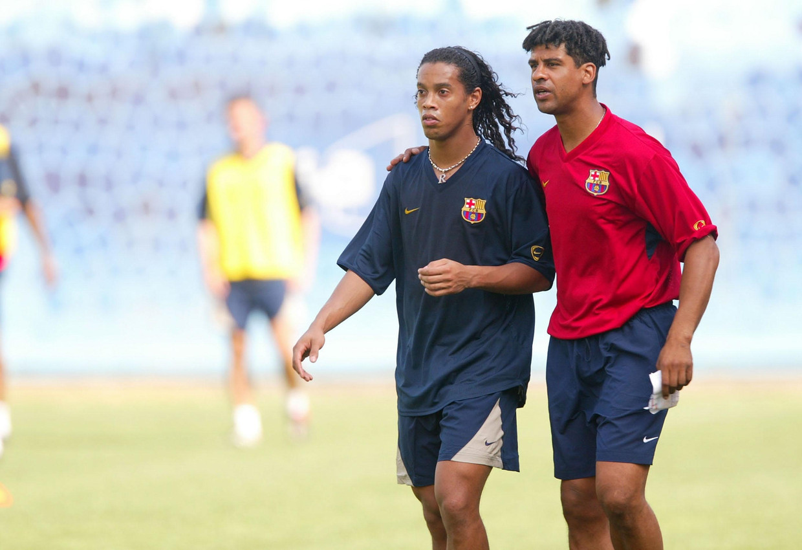
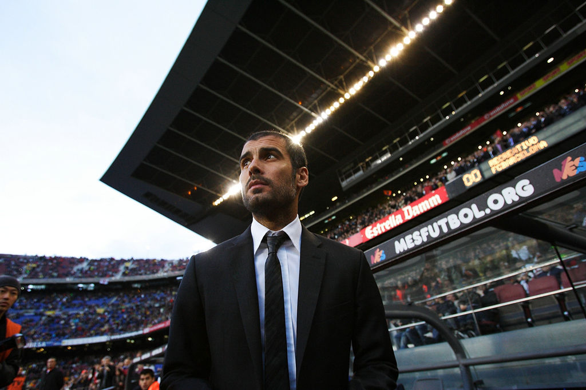

The Greatest Team – FC Barcelona 2008-2009
Previous season
Though it did not produce silverware, FC Barcelona's 2007–08 season would mark a period of change within the club, having many firsts and lasts. Most importantly, this would be Ronaldinho's last season with the club, being displaced by the coming of Arsenal legend Thierry Henry. This season also marked the breakthrough of young talent Bojan Krkić into the first team, as well as the emergence of Lionel Messi as one of the team's key players. On the other hand, this would be Lilian Thuram's last season as a professional footballer, as well as Gianluca Zambrotta's last with the club.
After losing to Manchester United in the semi-final of the 2007–08 Champions League, Rijkaard was asked whether he would quit at the end of the season, since he had not won anything for two successive seasons. He replied, "I have no intention of leaving. It would be different if the players were saying it is time for me to go but that is not the case." On 1 May 2008, it was reported that Rijkaard allegedly confided to a colleague that he would be stepping down as Barcelona manager at the end of the season, but 24 hours later, he stated in a press conference that he had no intention of leaving the club.
On 8 May 2008, the day after Barcelona's dismal 4–1 defeat to archrivals Real Madrid, Barcelona president Joan Laporta announced that at the end of the 2007–08 season, Rijkaard would no longer be head coach of the first team. Laporta made the announcement after a board meeting, and Rijkaard was succeeded by Pep Guardiola.[18] Laporta made it clear that Rijkaard's achievements "made history" and praised him for his time at the club.
Barcelona B
Guardiola was appointed coach of Barcelona B on 21 June 2007 with Tito Vilanova as his assistant. Under his guidance, the team subsequently won their Tercera División group and qualified for the 2008 Segunda División B playoffs, which the team won, thereby achieving promotion.[47] FC Barcelona President Joan Laporta announced in May 2008 that Guardiola would be appointed manager of the senior Barcelona squad to replace Frank Rijkaard at the end of the 2007–08 season.[48] According to a 2013 biography of Michael Laudrup, he and not Guardiola was Laporta's first choice.
2008–09: First season with first team and historic treble.
| Position | Team | Played | W | D | L | GF | GA | GD | Pts |
|---|---|---|---|---|---|---|---|---|---|
| 1 | Barcelona | 38 | 27 | 6 | 5 | 105 | 35 | +70 | 87 |
| 2 | Real Madrid | 38 | 25 | 3 | 10 | 83 | 52 | +31 | 78 |
| 3 | Sevilla | 38 | 21 | 7 | 10 | 54 | 39 | +15 | 70 |
| 4 | Atletico Madrid | 38 | 20 | 7 | 11 | 80 | 57 | +23 | 67 |
| 5 | Villarreal | 38 | 18 | 11 | 9 | 61 | 54 | +7 | 65 |
| Overall | |||||||||||||||||||||||||||||||
|---|---|---|---|---|---|---|---|---|---|---|---|---|---|---|---|---|---|---|---|---|---|---|---|---|---|---|---|---|---|---|---|
| Pld | W | D | L | GF | GA | GD | Pts | ||||||||||||||||||||||||
| 38 | 27 | 6 | 5 | 105 | 35 | +70 | 87 | ||||||||||||||||||||||||
| Home | |||||||||||||||||||||||||||||||
|---|---|---|---|---|---|---|---|---|---|---|---|---|---|---|---|---|---|---|---|---|---|---|---|---|---|---|---|---|---|---|---|
| W | D | L | GF | GA | GD | ||||||||||||||||||||||||||
| 14 | 3 | 2 | 61 | 14 | +47 | ||||||||||||||||||||||||||
| Away | |||||||||||||||||||||||||||||||||||
|---|---|---|---|---|---|---|---|---|---|---|---|---|---|---|---|---|---|---|---|---|---|---|---|---|---|---|---|---|---|---|---|---|---|---|---|
| W | D | L | GF | GA | GD | ||||||||||||||||||||||||||||||
| 13 | 3 | 3 | 44 | 21 | +23 | ||||||||||||||||||||||||||||||
Upon being appointed, Guardiola said that Ronaldinho, Deco, Samuel Eto'o and others were not part of his plans for the coming season. By the time of the announcement, he had already offloaded full back Gianluca Zambrotta to Milan, attacking midfielder Giovani dos Santos to Tottenham Hotspur and midfielder Edmílson to Villarreal. Deco went to Chelsea while Ronaldinho joined Zambrotta in Milan. Lilian Thuram was initially set to join Paris Saint-Germain on a free transfer, but the discovery of a heart condition put a stop to the move, and the veteran retired to tend to his health. Oleguer signed with Ajax, Santiago Ezquerro was released by Barça and Marc Crosas was sold to Celtic. The fate of Eto'o took much of the summer to unravel, with the Cameroonian linked with several clubs, but Guardiola finally declared that he would stay after his dedication in training and participation in the pre-season.
In association with Barcelona Director of Sport Txiki Begiristain, several new signings were made by Guardiola – Dani Alves and Seydou Keita arrived from Sevilla; Martín Cáceres from Villarreal by way of Recreativo de Huelva; Gerard Piqué returned from Manchester United; and Alexander Hleb was signed from Arsenal. Henrique was also signed from Palmeiras, but was immediately loaned out to Bayer Leverkusen. In interviews with the press, Guardiola stressed a harder work ethic than before, but also a more personal approach during training and a closer relationship with his players. Along with the new signings, Guardiola promoted canteranos Sergio Busquets, Pedro and Jeffrén to the first-team squad.
Guardiola's first competitive game as coach was in the third qualifying round of the Champions League, in which Barça comfortably beat Polish club Wisła Kraków 4–0 in the first leg at home. They then lost 1–0 in the second leg, but progressed with a 4–1 aggregate victory. Promoted Numancia also defeated Barcelona in the opening match-day of the La Liga, but the team then went on an undefeated streak for over 20 matches to move to the top of the league. Barça maintained their spot atop La Liga's table, securing their first league title since 2006 when rivals Real Madrid lost at Villarreal on 16 May 2009. The most important match, however, was on 2 May when they defeated Real Madrid 6–2 at the Santiago Bernabéu Stadium. The league title was the second piece of silverware in Guardiola's first season at the Camp Nou. Earlier on 13 May 2009, Barcelona won the Copa del Rey, defeating Athletic Bilbao by 4–1.
In the Champions League semi-final against Chelsea, a late Andrés Iniesta goal in the second leg at Stamford Bridge put Barcelona through, with an ecstatic Guardiola celebrating the goal by sprinting down the touchline near to where his players were celebrating. In the final of the Champions League, Barcelona beat Manchester United 2–0. In doing so, they became the first Spanish club to win the domestic cup, the league, and the European club titles (the treble) in the same season. The treble-winning season is regarded as one of the club's finest in its history. Furthermore, he became the youngest man to coach a Champions League winning team.